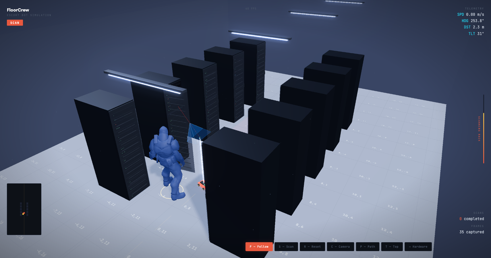

Escort Bot — Project Scope
Autonomous person-following robot for vendor escort on the data center floor. Replaces a DCT babysitting a vendor with a Pi-powered bot that tracks and follows them through the aisles.

Why this exists
When a vendor or visitor arrives on the DC floor, security policy requires a DCT to escort them at all times. This means one technician stops their actual work — break-fix tickets, optic installs, rack builds — to walk alongside someone who may be there for 30 minutes to several hours.
At a facility like EVI01, this happens multiple times per shift. Each escort is a compounding delay on the ticket queue. The DCT isn't fixing anything — they're walking.
What the escort bot does
Follows autonomously
Camera detects the person using OpenCV DNN MobileNet SSD. Proportional steering keeps the bot following at a safe distance — no remote control.
Stops when they stop
If the person pauses at a rack, the bot holds position. Bounding box area acts as a distance proxy — too close, stop. Too far, drive.
Obstacle avoidance
Front-mounted HC-SR04 ultrasonic sensor. Anything within 30cm = emergency stop. Prevents collisions with racks, carts, cables.
Core insight: This isn't a general-purpose robot. It does one thing — follow a person through the DC — and it does it with ~120 lines of Python on a $35 computer.
System design
The entire system runs on a single Raspberry Pi 5. No cloud, no ROS, no external servers. One Python file, one main loop.
Detection pipeline
Main loop
Why YOLOv8n
| Approach | Pi 5 FPS | Verdict |
|---|---|---|
| HOG + SVM | 5-8 | Too slow |
| YOLOv8 nano | 7-10 | Heavier install |
| MobileNet SSD v2 (OpenCV DNN) | 15-25 | Best speed:accuracy |
| YOLO + Hailo 8L | 80+ | $70 accelerator, overkill |
Steering and distance control
Proportional steering
Person's bounding box center vs frame center. Error signal (-0.5 to +0.5) multiplied by Kp, applied differentially to left/right motors. Smooth proportional turns, not jerky left/right.
Distance control
Bounding box area as proximity proxy. Large bbox = close, small = far. Target: 15% of frame area.
- bbox > 20% — too close, stop
- bbox 10-20% — sweet spot, creep
- bbox < 10% — too far, drive at base speed
Tuning parameters
| Constant | Default | Adjust when... |
|---|---|---|
KP | 1.0 | Turns too hard (lower) or too soft (raise) |
BASE_SPEED | 0.5 | Too fast (lower) or can't keep up (raise) |
TARGET_AREA_RATIO | 0.15 | Follows too close (lower) or too far (raise) |
STOP_DISTANCE | 0.30m | Stops too early (lower) or hits things (raise) |
LOST_TIMEOUT | 1.5s | Stops too quickly (raise) or wanders (lower) |
CONFIDENCE_THRESHOLD | 0.5 | False positives (raise) or misses (lower) |

Why Raspberry Pi over iRobot Create 3
We evaluated two platforms for the escort bot: a Raspberry Pi 5 with a robot chassis vs. iRobot's Create 3 (ROS 2-based Roomba platform). Pi won on every axis that matters for a 48-hour hackathon build.
Raspberry Pi 5 + Chassis
- Zero procurement risk Already own Pi 4, Pi 5, and Pico. No ordering, no shipping gambles.
- 48-hour build window Pi + chassis + camera prototypes in one evening. Simpler stack, faster iteration.
- Stronger demo story "Built from a $35 Pi and a chassis" — scrappy, engineered, DC-native. Judges remember that.
- Full vision pipeline control Person detection, following logic, rack scanning — all custom, all ours.
iRobot Create 3
- Must order hardware One shipping delay and the project is dead. Unacceptable risk this close to demo.
- ROS 2 learning curve Entirely new framework. Massive time sink when we need to be building, not learning.
- "We programmed a Roomba" Less impressive narrative. Feels off-the-shelf, not engineered for a DC floor.
- Sensors designed for vacuuming Not for following humans through hot aisles. Wrong tool for the job.
Final call: Pi 5 + robot chassis + Pi Camera Module + OpenCV person-following script. The Create 3 is a cool platform — save it for v2 if Elktron takes off.
Bill of materials
| Part | Spec | Cost |
|---|---|---|
| Freenove 4WD Smart Car Kit | 4 motors, wheels, chassis, camera, ultrasonic, servo | ~$65 |
| Raspberry Pi 5 (8GB) | Quad-core Cortex-A76 | $0 (owned) |
| 18650 batteries (2x) | 3.7V, 3000mAh+, flat-top | ~$12 |
| 18650 charger | 2-bay, USB | ~$8 |
| USB-C power bank | 5V/3A+, 10000mAh+ | ~$15 |
| Total (minus Pi) | ~$100 | |
GPIO wiring
HC-SR04 ECHO pin outputs 5V. Pi GPIO is 3.3V. Use a voltage divider (1k + 2k resistors) or the 3.3V-safe HC-SR04P variant.
Codebase
Setup on Pi 5
What could go wrong
| Risk | Severity | Mitigation |
|---|---|---|
| Detection fails in low light | Medium | DC aisles are well-lit. Can lower confidence or add IR LEDs. |
| Follows wrong person | Medium | Tracks largest bbox. For demo, clear the aisle. |
| Motors too fast | High | BASE_SPEED capped at 50%. Ultrasonic stop at 30cm. |
| Misses low obstacles | Medium | Sensor at chassis height. Keep demo path clear. |
| Freenove camera incompatible | Medium | Kit uses USB. Fallback: OpenCV VideoCapture(0). |
Build schedule
Total hands-on time: ~8-10 hours. Code is written — time is physical assembly and floor tuning.
Key resources
| Resource | What it is |
|---|---|
| Freenove 4WD GitHub | Kit code, tutorials, app control |
| mshakeelt/Human-Following-Robot | Fork base — OpenCV person-following on Pi |
| Jeff Geerling — Pi 5 Detection | YOLOv8n + picamera2 benchmarks |
| gpiozero Docs | Motor control API |
| Ultralytics Pi Guide | End-to-end YOLOv8 + Pi tutorial |